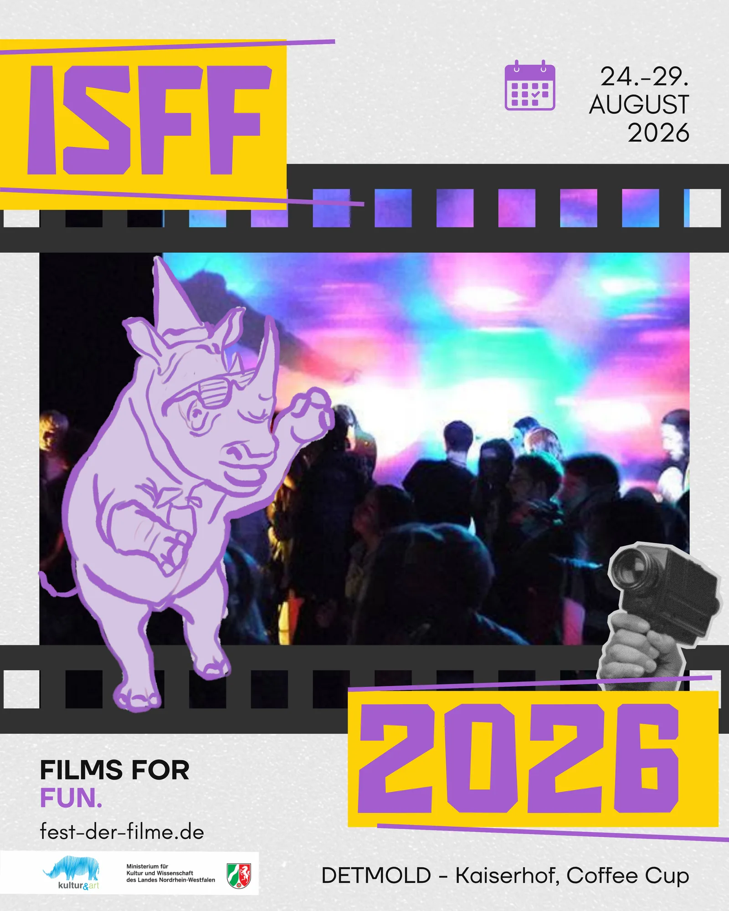

About us
Kultur & Art Initiative e.V.
Founded in 2002, we develop cultural projects, media education and international youth exchanges from Detmold and Antalya.
Learn moreFeatured Kultur & Art stories

24–29 August 2026
International Short Film Festival Detmold
Six days of short films, live encounters, music and accessible cinema.

Creativity Link Up
Connect through creativity and shared experience
Youth work, media education, mobility and international collaboration.
What we do
Projects
International projects
Youth exchange across cultures
Projects within the EU Erasmus+ programme bring young people from different countries together.
Local projects
Creative and media education

Expert-led sessions encourage practical participation, discussion and connection.
ISFF Detmold
Short films for everyone
Organized since 2004, the festival brings international short films, live exchange and accessible media experiences to Detmold and online audiences.
Take part
Explore opportunities
Workshops
Create, discuss and learn together
Local and international projects combine culture, media and non-formal education.
Film festival
Experience global short films in Detmold
Discover international filmmakers, artists and a diverse programme.
Erasmus+
Move, meet and learn internationally
Youth exchanges connect mobility, inclusion and shared creative practice.